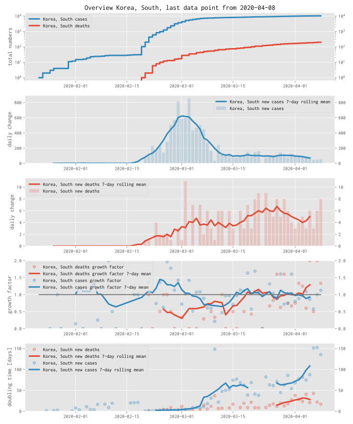
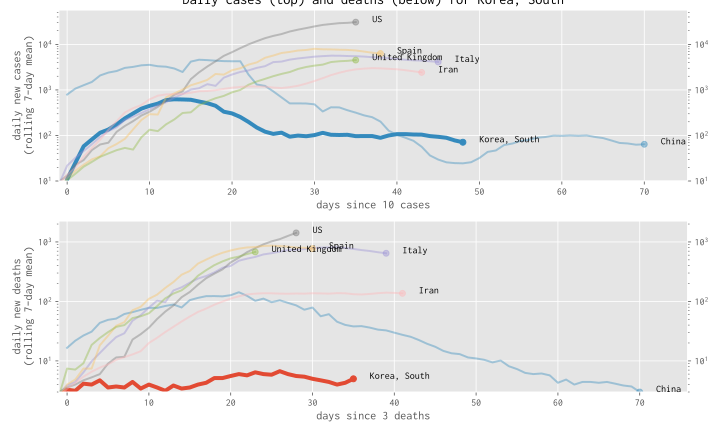

Dashboard: 
Plots and basic data tables for all countries for which the Johns Hopkins University provides data
Plots and basic data tables for all “Kreise” in Germany (based on data from Robert Koch Institute)
Selected Plots for strongly affected countries (discussion below), see index.ipynb (faster version if it works)
An example plot for South Korea is shown below, followed by a brief discussion/description of the different plots.
All of the plots and tables can be recomputed using the Binder service (link in each webpage, or use go here and select the relevant notebook yourself.
The reporting in the media on the #COVID19 situation is not always providing sufficient context to interpret the numbers: we hear many news reports about how many people have been confirmed to be infected by the virus, or have died on a particular day.
The relevant questions are though: how do these numbers compare to yesterday, and the week before? Can we see and understand how quickly infections are spreading? Can we see if the containment measures of people staying at home, schools and universities closing etc are showing any effect and if so, how strong is it? What can we learn from countries that have managed to reduce the number of new infections?
With the plots and data available here, we hope to contribute to this.
Discussion and contributions are welcome.
Once the epidemic growth of infections is brought under control, we will need to find a fine balance between measures (such as social distancing, closure of schools, restaurants, shops, etc) and permitting work and live as was possible before the pandemic to avoid repeated exponential growth of infections.
We can start to see this in the data for countries such as China and South Korea. We need to learn to better read these data. It will be essential to monitor such indicators for some time (months or years?) to come.
The source code that creates the plots is available here, can be inspected, downloaded, modified and improved.
Using Jupyter Notebooks and the MyBinder project project, anyone with a web browser can execute the source (to create the same or new plots) from within a web browser, by clicking this link.
Contributions are welcome
We gather some ideas for further analysis and features that would be nice or useful.
For those with programming and software engineering skills, there is a document info.md with more details about the project and a todo list.
Bugs and ideas can be reported as a “New issue” – a github account is necessary.
 
This plot computes the doubling time of the cases (blue) and deaths (red), assuming that the growth of cases and deaths as shown in plot 1 is exponential.
in more detail, we compute the doubling period from one day to the next and show this as transparent dots.
If a value of 3 is shown, this means that at that point in time, it took 3 days for the numbers of cases (or deaths) to double.
the solid line is a 7-day rolling mean over these data points and provides more robust guidance.
Looking at the solid lines, we may be able to assess the spread of the virus.
For many countries, in the early stages of the outbreak, this doubling time for confirmed infections (blue line) is somewhere around 2 to 3 days.
As the spread of infections is reduced (by schools closing, people exercising social distancing, staying at home, etc), the growth rate of the exponential function becomes smaller, and correspondingly the doubling time increases.
We would like to see the doubling time to get larger, as this an indication that the growth of infections and deaths is decreasing.
Hopefully, we can learn from other countries, what kind of doubling period has to be achieved, to control the number of infected people.
The example data for South Korea shows that the doubling time grows from around 3 days to around 60 days as the number of daily new infections (plot 2) decreases.
as the doubling period reaches 60, the number of daily new infections stabilises around 100.
There is no red curve for the doubling time of deaths as there have been too few deaths to be useful for the analysis.
X-axis shows the number of days since a particular number of new cases per day (such as 10) have occurred in that country, and the y-axis the number of new cases for that day.
We see that countries follow similar paths, with the common properties that the curve increases until the number of cases per day peaks, and then the curve comes down again.
The y-axis is logarithmic.
Due to the logarithmic y-axis, this visualisation can help to understand at what stage in the outbreak an area is (despite the different size of the countries and numbers of cases).
The curve shows as 7-day rolling mean to provide a smoother line than the noisier individual data points (in particular with fewer cases per day). This leads to non-integer values.
Despite the errors in the data, we can try to learn something from it as long as we remember the data is not representing the full truth of the situation but just the measurement that we have available.
For some plots, we have omitted data lines or points because there were not enough numbers and data points to estimate anything.
Some data points appear random or as outliers - for some we understand the reasons, for others not.
It is possible we have made errors in our processing of the numbers. The source code is available for anyone to check. (Please feedback any observations.)
The plots and code here has been put together by volunteers who have no training in epidemiology. THere are likely to be errors in the processing. You are welcome to use the material at your own risk. The license is available.